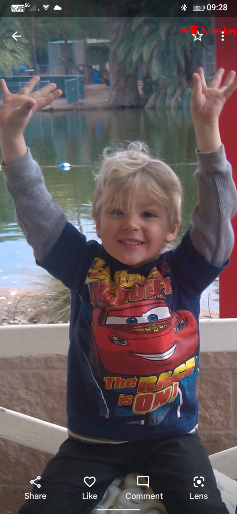

Kali (bird) Goff is a Pitbull that is about 75lbs and can run over 40mph.
She is a brindle boxer pit mix and she is the most loved sibling in the house

Mac Gealai is my father.
He was born in 1981 and he has spent his entire life trying to help people.
He is very experienced with psychedelics and drugs in general.
He wants to be a Psychadelic Assisted Therapist(PAT), and is currently alpha of the pack.


Dawn Moonsong is my mother.
She was also born in 1981 and she spent her school years studying nursing.
She worked her entire life to support my existence and I have her to thank.
She is an integral part of the family as she 1 pays the bills and 2 is the glue holding our family together.
She also has been the one to give me most of my experiences.


I am Bishop goff.
I have had quite the potential and quite the fun.
My life so far has been about learning science and math.
I also focus on finding myself more often than I should.
I may be lower than Kali on the pack scale.

